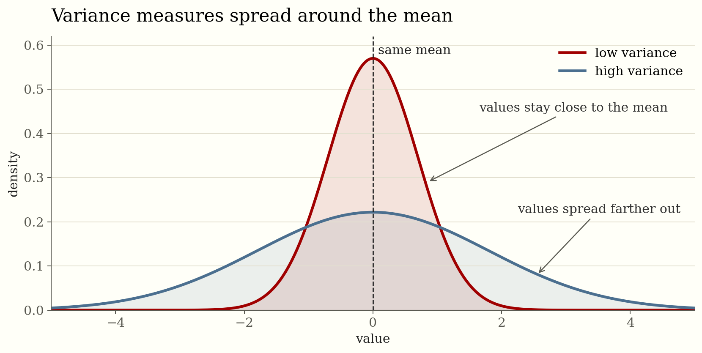
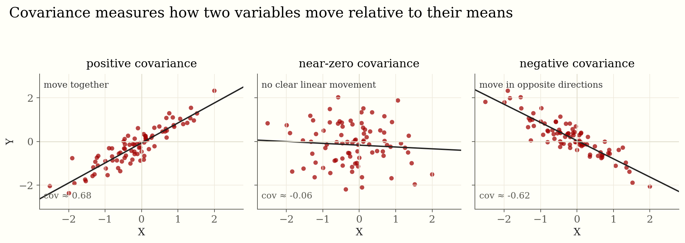

Research Notes · Probability · Working tutorial
Probability for Machine Learning: A Working Tutorial
The concepts, equations, and research habits needed to reason clearly under uncertainty.
Probability is a language for incomplete information. It lets us describe possible outcomes, learn from finite data, compare models, and choose actions without pretending uncertainty has disappeared.
This tutorial starts with ordinary examples such as coins, dice, umbrellas, and noisy measurements. Each idea is then translated into the form used in machine learning research. The formulas matter, but the assumptions behind them matter more.
1. Probability Is a Measure, Not a Guess
Begin with a sample space \(\Omega\): the set of outcomes that could occur. An event is a subset of those outcomes. For a six-sided die, \(\Omega=\{1,2,3,4,5,6\}\), while "the roll is even" is the event \(\{2,4,6\}\).
A probability measure assigns a number to each event. It follows three rules: probabilities are never negative, the whole sample space has probability one, and probabilities add for events that cannot happen together.
\[ \begin{aligned} \mathbb{P}(A)&\geq 0, \\ \mathbb{P}(\Omega)&=1, \\ \mathbb{P}(A\cup B)&=\mathbb{P}(A)+\mathbb{P}(B) \end{aligned} \]
The complement rule follows immediately: \(\mathbb{P}(A^c)=1-\mathbb{P}(A)\). If a die has probability \(1/6\) of showing six, it has probability \(5/6\) of not showing six.
The law of total probability breaks a difficult question into simpler cases. If events \(B_1,\ldots,B_k\) cover all possibilities without overlap, then
\[ \mathbb{P}(A)=\sum_{j=1}^{k}\mathbb{P}(A\mid B_j)\mathbb{P}(B_j). \]
Research habit: ask what outcomes are possible, what event is being assigned probability, and what cases were averaged together. A number is not meaningful until those choices are clear.
2. Start With the Random Variables
Start by naming what is uncertain. If you flip a coin, \(X\) might be heads or tails. If you roll a die, \(X\) might be one of six numbers. If you measure tomorrow's temperature, \(X\) might be a real number like \(23.4^\circ\)C.
A random variable maps possible outcomes to values. A distribution tells us how probability is spread over those values.
\[ p_X(x) = \mathbb{P}(X = x) \]
For continuous values, a density is not a probability by itself. Probabilities come from areas under the curve:
\[ \mathbb{P}(a \leq X \leq b) = \int_a^b f_X(x)\,dx \]
A cumulative distribution function gives the probability that a variable is at or below a threshold:
\[ F_X(t)=\mathbb{P}(X\leq t). \]
CDFs make quantiles precise. The median is a value with half the probability below it, and the \(95\)th percentile is a threshold below which roughly \(95\%\) of outcomes fall. This matters whenever a model reports prediction intervals or tail risk rather than only a mean.
Plain read: discrete probability counts outcomes; continuous probability measures regions. Mixing those up is a common source of confusion around likelihoods and densities.
3. Learn the Three Distribution Views
The joint distribution \(p(x,y)\) describes variables together. The marginal distribution removes variables we are not asking about. The conditional distribution focuses on what is plausible after some evidence is known.
| View | Question | Formula |
|---|---|---|
| Joint | How do \(X\) and \(Y\) behave together? | \(p(x,y)\) |
| Marginal | What does \(X\) look like after removing \(Y\)? | \(p(x)=\sum_y p(x,y)\) |
| Conditional | What does \(Y\) look like once \(X\) is known? | \(p(y \mid x)=p(x,y)/p(x)\) |
For example, let \(X\) be the weather and \(Y\) be whether someone carries an umbrella. The joint distribution describes weather and umbrella-carrying together. The marginal distribution describes weather alone. The conditional distribution asks: if we know it is raining, how likely is the umbrella?
The product rule rebuilds a joint distribution from a conditional distribution and a marginal distribution:
\[ p(x,y)=p(y\mid x)p(x)=p(x\mid y)p(y). \]
Applying the product rule repeatedly gives the chain rule. For three variables, \(p(x,y,z)=p(z\mid x,y)p(y\mid x)p(x)\). Autoregressive models use this same identity to turn one high-dimensional distribution into a sequence of conditional predictions.
4. Expectations Are Long-Run Averages
Expectation is the average value under a distribution:
\[ \begin{aligned} \mathbb{E}[X] &= \sum_x x\,p(x) && \text{(discrete)}, \\ \mathbb{E}[X] &= \int x f(x)\,dx && \text{(continuous)} \end{aligned} \]
More generally, we care about the expectation of a function:
\[ \begin{aligned} \mathbb{E}[g(X)] &= \sum_x g(x)p(x) && \text{(discrete)}, \\ \mathbb{E}[g(X)] &= \int g(x)f(x)\,dx && \text{(continuous)} \end{aligned} \]
For a fair die, the expected roll is the long-run average you would get after many rolls. It does not mean you will ever roll \(3.5\). It means the average of many rolls settles near \(3.5\).
Expectation is linear even when variables are dependent: \(\mathbb{E}[aX+bY]=a\mathbb{E}[X]+b\mathbb{E}[Y]\). This simple fact is behind minibatch averages, empirical risk, and Monte Carlo estimators.
Nonlinear transformations require more care. In general, \(g(\mathbb{E}[X])\neq\mathbb{E}[g(X)]\). For convex \(g\), Jensen's inequality states \(g(\mathbb{E}[X])\leq\mathbb{E}[g(X)]\). This is why "apply a nonlinear function, then average" is not interchangeable with "average, then apply the function."
Spread and Co-Movement
\[ \mathrm{Var}(X) = \mathbb{E}[X^2] - \mathbb{E}[X]^2 \]
\[ \mathrm{Cov}(X,Y) = \mathbb{E}[(X-\mathbb{E}[X])(Y-\mathbb{E}[Y])] \]
Variance Behavior
Variance is about distance from the mean. When most values stay close to the mean, variance is small. When values spread far away, variance grows. Because the deviations are squared, far-away points matter much more than nearby points.

Covariance Behavior
Covariance is about how two variables move relative to their own means. If \(X\) is above its mean when \(Y\) is also above its mean, their product of deviations is positive. If one is above its mean while the other is below, the product is negative. If there is no stable linear movement, the positive and negative products mostly cancel.

The sign of covariance is easy to interpret; the magnitude is harder because it depends on the units of \(X\) and \(Y\). Correlation fixes that by normalizing covariance into a unitless value between \(-1\) and \(1\).
Plain read: a small sample can give a noisy average. A larger sample usually gives a more stable average. Variance tells you how much noise to expect.
5. Independence Is an Assumption, Not a Decoration
Independence means that information about one variable does not change what we believe about another. If \(X\) and \(Y\) are independent, then seeing \(X=x\) gives no useful information about \(Y\). The conditional distribution stays the same:
\[ p(y \mid x)=p(y) \]
The same idea can be written through the joint distribution:
\[ p(x,y)=p(x)p(y) \]
Dependence is the opposite: knowing one variable changes what we believe about the other. If you know it is raining, the chance that a person is carrying an umbrella goes up. So weather and umbrella-carrying are dependent. If you flip a fair coin and roll a fair die, seeing heads tells you nothing about whether the die landed on six. Those two outcomes are independent.
A useful test is: after I learn \(X\), would I update my belief about \(Y\)? If yes, the variables are dependent. If no, they are independent.
| Relationship | Meaning | Formula |
|---|---|---|
| Independent | Knowing \(X\) does not change beliefs about \(Y\). | \(p(y \mid x)=p(y)\) |
| Dependent | Knowing \(X\) changes beliefs about \(Y\). | \(p(y \mid x)\neq p(y)\) |
| Conditionally independent | The dependence disappears after knowing \(Z\). | \(p(x,y \mid z)=p(x \mid z)p(y \mid z)\) |
Independence Is Stronger Than Zero Correlation
Correlation and covariance only describe linear co-movement. Independence says there is no relationship at all: no linear pattern, no curved pattern, no threshold pattern, no useful information. So independent variables have zero covariance, but zero covariance does not always imply independence.
For example, if \(X\) is symmetric around zero and \(Y=X^2\), then \(X\) and \(Y\) are clearly dependent: knowing that \(|X|\) is large tells us \(Y\) is large. But the linear covariance can be zero because positive and negative values of \(X\) cancel out.
Conditional Independence
Conditional independence is often more useful than plain independence. It means two variables may look related overall, but once we know a third variable, the relationship is explained away.
A simple example is two thermometers in the same room. Let \(Z\) be the true room temperature, \(X\) be the first thermometer reading, and \(Y\) be the second thermometer reading. The two readings are dependent overall because both are driven by the same room temperature. But if we already know the true temperature \(Z\), then the remaining small errors of the two thermometers can be treated as independent:
\[ p(x,y \mid z)=p(x \mid z)p(y \mid z) \]
This kind of assumption lets us simplify a problem. Once we know the room temperature, we no longer need to explain one thermometer reading by looking at the other; both are just noisy readings of the same underlying value.
The i.i.d. Assumption
You will often see the phrase i.i.d.: independent and identically distributed. Independent means one observation does not affect the next. Identically distributed means every observation comes from the same rule.
Repeated flips of the same fair coin are a good simple example. One flip does not control the next, and each flip has the same chance of heads. The assumption breaks if the coin is changed halfway through, or if the outcome of one trial changes how the next trial is done.
Plain read: independence is not automatic. Ask whether one observation can influence another, and ask whether all observations are really coming from the same situation.
6. Bayes' Rule: Updating Belief With Evidence
Bayes' rule is the cleanest expression of how prior belief and new evidence combine. Imagine a bag that contains mostly red balls or mostly blue balls. Before drawing, you have a prior belief about which bag you have. After drawing a few red balls, you update that belief:
\[ p(\theta \mid D) = \frac{p(D \mid \theta)p(\theta)}{p(D)} \]
| Term | Name | Meaning |
|---|---|---|
| \(p(\theta)\) | Prior | What we believe before seeing the data |
| \(p(D \mid \theta)\) | Likelihood | How well \(\theta\) explains the observed data |
| \(p(D)\) | Evidence | The normalizer that makes probabilities sum to one |
| \(p(\theta \mid D)\) | Posterior | What we believe after seeing the data |
Maximum likelihood chooses the explanation that makes the observations most plausible. If a coin lands heads 80 times out of 100, maximum likelihood prefers a coin whose chance of heads is near \(0.8\):
\[ \hat{\theta}_{\mathrm{MLE}}=\arg\max_\theta p(D \mid \theta) \]
Maximum a posteriori estimation also includes what we believed before seeing the data. If we strongly believed the coin was close to fair before seeing only a small number of flips, the prior pulls the estimate back toward \(0.5\):
\[ \hat{\theta}_{\mathrm{MAP}}=\arg\max_\theta p(D \mid \theta)p(\theta) \]
The point is simple: likelihood listens to the observations; the prior expresses what we believed before the observations; the posterior combines both.
A Bayesian analysis becomes predictive by averaging future outcomes over the posterior:
\[ p(y_{\mathrm{new}}\mid x_{\mathrm{new}},D) = \mathbb{E}_{\theta\mid D} \left[p(y_{\mathrm{new}}\mid x_{\mathrm{new}},\theta)\right]. \]
A point estimate uses one parameter value. A posterior predictive distribution averages across plausible parameter values, so parameter uncertainty remains visible in the final prediction.
7. Likelihood and Cross-Entropy
If observations are independent given \(\theta\), the likelihood factors into a product. For coin flips, this means the probability of the whole sequence is the product of the probability of each flip:
\[ p(D \mid \theta)=\prod_{i=1}^n p(x_i \mid \theta) \]
Products of many probabilities become tiny, so we often use log-likelihood instead. The log turns products into sums, which are easier to work with:
\[ \log p(D \mid \theta)=\sum_{i=1}^n \log p(x_i \mid \theta) \]
Cross-entropy compares a true distribution \(p\) with an estimated distribution \(q\). A simple way to think about it is weather forecasting: if rain happens often but your forecast keeps assigning it tiny probability, cross-entropy becomes large:
\[ H(p,q)=-\mathbb{E}_{x\sim p}[\log q(x)] \]
In supervised learning we do not know the full data-generating distribution \(p\), so we minimize an empirical average of negative log-probabilities:
\[ \mathrm{NLL}(\theta) = -\frac{1}{n}\sum_{i=1}^{n}\log p_\theta(y_i\mid x_i). \]
Negative log-likelihood is not merely a convenient loss. It rewards a model for assigning probability to what actually happens and strongly penalizes confident predictions that are wrong.
Plain read: cross-entropy does not just ask whether you guessed the right outcome. It also asks whether your confidence matched reality.
8. Common Distributions Worth Recognizing
| Distribution | Use it when | Simple example |
|---|---|---|
| Bernoulli | There is one binary outcome. | A coin flip: heads or tails. |
| Categorical | There is one label among \(K\) choices. | A die roll: one of six faces. |
| Binomial | You count successes across fixed trials. | Number of heads in 20 coin flips. |
| Poisson | You count events over time or space. | Number of calls received in one hour. |
| Gaussian | Values vary continuously around a center. | Small measurement errors around a true length. |
| Uniform | Every value in a bounded interval is equally plausible. | A random position chosen along a one-meter line. |
| Exponential | You model waiting time until the next event. | Time until the next phone call arrives. |
| Gamma | You model a positive quantity or waiting time for several events. | Time until the fifth phone call arrives. |
| Beta | You need uncertainty over one probability. | Uncertainty about how biased a coin is. |
| Dirichlet | You need uncertainty over class probabilities. | Uncertainty over the mix of red, blue, and green balls in a bag. |
9. Sampling: Estimating What We Cannot Compute
Many expectations are too hard to calculate exactly. Monte Carlo methods estimate them with samples:
\[ \mathbb{E}[g(X)] \approx \frac{1}{m}\sum_{j=1}^m g(x^{(j)}), \qquad x^{(j)}\sim p(x) \]
Suppose you want to know the average height in a city. Measuring everyone is too expensive, so you measure a sample and average those measurements. The estimate is not exact, but it often gets better as the sample becomes larger and more representative.
The bootstrap estimates sampling uncertainty by repeatedly resampling the observed dataset with replacement. Importance sampling handles a different problem: samples come from an easier distribution \(q\), then receive weights \(p(x)/q(x)\) so they estimate expectations under the target distribution \(p\).
\[ \mathbb{E}_{p}[g(X)] = \mathbb{E}_{q}\!\left[g(X)\frac{p(X)}{q(X)}\right]. \]
Tradeoff: more samples usually reduce variance, but they take more time and effort. A small but well-chosen sample can be better than a large biased one.
10. Why Averages Work Until They Do Not
The law of large numbers says sample averages converge toward expectations:
\[ \frac{1}{n}\sum_{i=1}^n X_i \to \mathbb{E}[X] \]
The central limit theorem says normalized sums often look Gaussian:
\[ \frac{\sum_{i=1}^n X_i-n\mu}{\sigma\sqrt{n}} \Rightarrow \mathcal{N}(0,1) \]
These ideas justify confidence intervals and error bars. The catch is that they work best when samples are reasonably independent and come from the same situation. If you only ask very tall people about average height, the average will still be biased no matter how many people you ask.
For an independent sample with standard deviation \(\sigma\), the standard error of the mean scales as \(\sigma/\sqrt{n}\). Reducing random error by half therefore requires roughly four times as many observations. More data helps with variance; it does not repair a biased sampling process.
11. Bias, Variance, and Irreducible Noise
Bias is systematic error. Variance is sensitivity to the sample. Irreducible noise is the part of the outcome that cannot be known from the information available.
\[ \mathbb{E}[(Y-\hat{f}(x))^2] = \mathrm{Bias}[\hat{f}(x)]^2 + \mathrm{Var}[\hat{f}(x)] + \sigma^2 \]
Think about estimating a person's weight using only their height. A simple rule may be biased because it misses many important factors. A rule built from a small sample may have high variance because it changes a lot depending on which people were measured. Even with a good rule, some uncertainty remains because height alone does not determine weight.
12. Predictive Uncertainty Has Two Sources
Aleatoric uncertainty is variation in the outcome that remains even if the model and its parameters were known exactly. A fair coin stays random no matter how many times we inspect it. In regression, measurement noise and unobserved causes often appear as aleatoric uncertainty.
Epistemic uncertainty comes from limited knowledge. If we have seen only five coin flips, we are uncertain about the coin's heads probability. More informative data can reduce this uncertainty, while aleatoric variation may remain.
| Source | Meaning | Typical response |
|---|---|---|
| Aleatoric | The outcome varies even when the process is known. | Model the full predictive distribution or observation noise. |
| Epistemic | Several models or parameter values remain plausible. | Collect informative data, average models, or report uncertainty. |
The law of total variance shows how these pieces combine. If \(\Theta\) represents uncertain model parameters, then
\[ \mathrm{Var}(Y\mid x,D) = \mathbb{E}_{\Theta\mid D}[\mathrm{Var}(Y\mid x,\Theta)] + \mathrm{Var}_{\Theta\mid D}(\mathbb{E}[Y\mid x,\Theta]). \]
Research habit: do not report "uncertainty" as one undifferentiated number. State what is random, what is unknown, and which part more data could reduce.
13. Entropy, KL, and Mutual Information
Entropy measures uncertainty:
\[ H(p)=-\sum_x p(x)\log p(x) \]
KL divergence measures how much extra cost we pay when we use \(q\) while the true distribution is \(p\):
\[ D_{\mathrm{KL}}(p\Vert q)=\sum_x p(x)\log\frac{p(x)}{q(x)} \]
KL divergence is asymmetric and is not a distance metric. It asks how costly it is to use \(q\) when expectations are taken under \(p\). Reversing the arguments asks a different question and usually gives a different value.
Mutual information measures how much learning one variable reduces uncertainty about another:
\[ I(X;Y) = D_{\mathrm{KL}}(p(x,y)\Vert p(x)p(y)) = H(X)-H(X\mid Y). \]
A fair coin flip and a separate die roll have zero mutual information. A number and its square share information even when their linear correlation can be zero. Mutual information therefore detects dependence more generally than covariance.
14. Calibration and Scoring Rules Evaluate Different Qualities
Accuracy asks how often the selected label is correct. Calibration asks whether stated probabilities match observed frequencies. A model may be accurate but overconfident, or calibrated but too uninformative to be useful.
If a forecaster assigns \(80\%\) probability to rain on many comparable days, rain should occur on about \(80\%\) of those days. If it occurs only half the time, the forecasts are overconfident.
Proper scoring rules evaluate the whole predictive distribution. For a binary event with outcome \(y\in\{0,1\}\) and predicted probability \(q\), the Brier score is
\[ \mathrm{Brier}(q,y)=(q-y)^2. \]
Log loss is more severe when a model assigns nearly zero probability to an event that occurs. Reliability diagrams and expected calibration error summarize calibration by bins, but their result depends on the binning scheme. Report the diagram or binning details, not only one scalar.
Research habit: evaluate discrimination, calibration, and sharpness separately. One metric rarely describes all three.
15. Decisions, Thresholds, and Shift
Probabilities become useful when they are connected to actions. Decision theory says choose the action with the lowest expected loss:
\[ a^\star=\arg\min_a \mathbb{E}[L(a,Y)\mid x] \]
Suppose the weather forecast says there is a \(40\%\) chance of rain. Should you carry an umbrella? If carrying it is easy and getting wet is annoying, \(40\%\) may be enough. If the umbrella is heavy and rain would not bother you much, maybe it is not. The same probability can lead to different actions because the costs are different.
Finally, remember that the situation you learned from may not match the situation you face later:
\[ p_{\mathrm{past}}(x,y)\neq p_{\mathrm{future}}(x,y) \]
If you estimate average commute time during summer, that estimate may not work during the first week of school. If you study umbrella use in a dry month, it may not describe a rainy month. This is distribution shift: the old pattern and the new pattern are not the same.
| Shift | What changes | Simple reading |
|---|---|---|
| Covariate shift | \(p(x)\) | The situations encountered become different. |
| Label shift | \(p(y)\) | The frequency of outcomes changes. |
| Concept shift | \(p(y\mid x)\) | The relationship between evidence and outcome changes. |
When uncertainty is too high, abstaining can be a valid action. Selective prediction asks a model to answer only on cases where its expected benefit exceeds the cost of a mistake or a referral. The threshold belongs to the decision problem, not to probability theory alone.
A Research Workflow for Probabilistic Claims
- Name the random variables, their support, and what is observed versus unknown.
- State the target distribution or expectation before choosing an estimator.
- Write the factorization and identify every independence or i.i.d. assumption.
- Separate likelihood, prior information, and the quantity ultimately used for prediction.
- Report sampling uncertainty, sensitivity to data, and any unmodeled sources of noise.
- Evaluate the full distribution with proper scores and inspect calibration separately.
- Test whether the deployment distribution differs from the data used for estimation.
- Connect probability estimates to an explicit loss, utility, threshold, or abstention rule.
Formula Sheet
| Concept | Formula |
|---|---|
| Conditional probability | \(p(a\mid b)=p(a,b)/p(b)\) |
| Total probability | \(p(a)=\sum_b p(a\mid b)p(b)\) |
| Product rule | \(p(a,b)=p(a\mid b)p(b)=p(b\mid a)p(a)\) |
| Chain rule | \(p(x_{1:n})=\prod_{i=1}^n p(x_i\mid x_{1:i-1})\) |
| Marginalization | \(p(a)=\sum_b p(a,b)\) or \(p(a)=\int p(a,b)\,db\) |
| Bayes' rule | \(p(a\mid b)=p(b\mid a)p(a)/p(b)\) |
| Expectation | \(\mathbb{E}[X]=\sum_x xp(x)\) or \(\int xf(x)\,dx\) |
| Variance | \(\mathrm{Var}(X)=\mathbb{E}[X^2]-\mathbb{E}[X]^2\) |
| Covariance | \(\mathrm{Cov}(X,Y)=\mathbb{E}[(X-\mathbb{E}X)(Y-\mathbb{E}Y)]\) |
| Correlation | \(\rho_{X,Y}=\mathrm{Cov}(X,Y)/(\sigma_X\sigma_Y)\) |
| Monte Carlo | \(\mathbb{E}[g(X)]\approx m^{-1}\sum_{j=1}^m g(x^{(j)})\) |
| Standard error of a mean | \(\mathrm{SE}(\bar X)=\sigma/\sqrt{n}\) |
| Entropy | \(H(p)=-\sum_x p(x)\log p(x)\) |
| Cross-entropy | \(H(p,q)=-\mathbb{E}_{p}[\log q(X)]\) |
| KL divergence | \(D_{\mathrm{KL}}(p\Vert q)=\mathbb{E}_p[\log p(X)-\log q(X)]\) |
| Mutual information | \(I(X;Y)=D_{\mathrm{KL}}(p(x,y)\Vert p(x)p(y))\) |
| Posterior predictive | \(p(y_\star\mid x_\star,D)=\int p(y_\star\mid x_\star,\theta)p(\theta\mid D)\,d\theta\) |
| Bayes decision rule | \(a^\star=\arg\min_a\mathbb{E}[L(a,Y)\mid x]\) |
Closing Perspective
Probability is not only a set of formulas. It is a discipline for keeping claims honest when information is incomplete.
A strong probabilistic argument makes four things visible: what can vary, what was assumed, what the data changed, and how uncertainty affects the final decision. When those pieces are explicit, other researchers can test the argument instead of merely trusting its output.